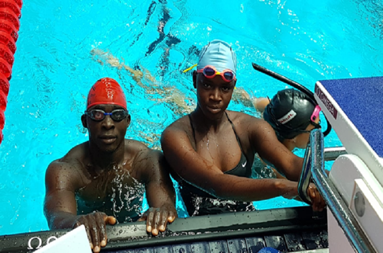

Sierra Leone Swimmer
Sierra Leone’s female swimmer, Tity Dumbuya is set to arrive at the Narita International Airport, in Tokyo, Japan ahead of her 50m Freestyle event on Friday 30th July 2021. The 18-year-old, who departed Sierra Leone on 23rd July 2021 together with her male teammate, Joshua Wyse and other officials was tested positive of Covid-19 at the Kotoko International Airport in Ghana. Following her second test which turned out to be negative after days at the isolation center in Accra, Tity departed Accra yesterday and she is currently at Addis Ababa waiting for her connecting flight”, said Sierra Leone Chef De Mission, Unisa Deen Kargbo. According to UDK, the athlete is expected to arrive in Japan in the afternoon hours of Wednesday. In another development, Wrestler, Foday Kargbo has received a late tripartite invitation through the National Olympic Committee of Sierra Leone to compete in the Freestyle Wrestling showdown scheduled for early August.
Reaching for the Stars
As we got further and further away, it [the Earth] diminished in size. Finally it shrank to the size of a marble, the most beautiful you can imagine. That beautiful, warm, living object looked so fragile, so delicate, that if you touched it with a finger it would crumble and fall apart. Seeing this has to change a man.
 To go places and do things that have never been done before – that’s what living is all about.
To go places and do things that have never been done before – that’s what living is all about.
Space, the final frontier. These are the voyages of the Starship Enterprise. Its five-year mission: to explore strange new worlds, to seek out new life and new civilizations, to boldly go where no man has gone before.
As I stand out here in the wonders of the unknown at Hadley, I sort of realize there’s a fundamental truth to our nature, Man must explore, and this is exploration at its greatest.